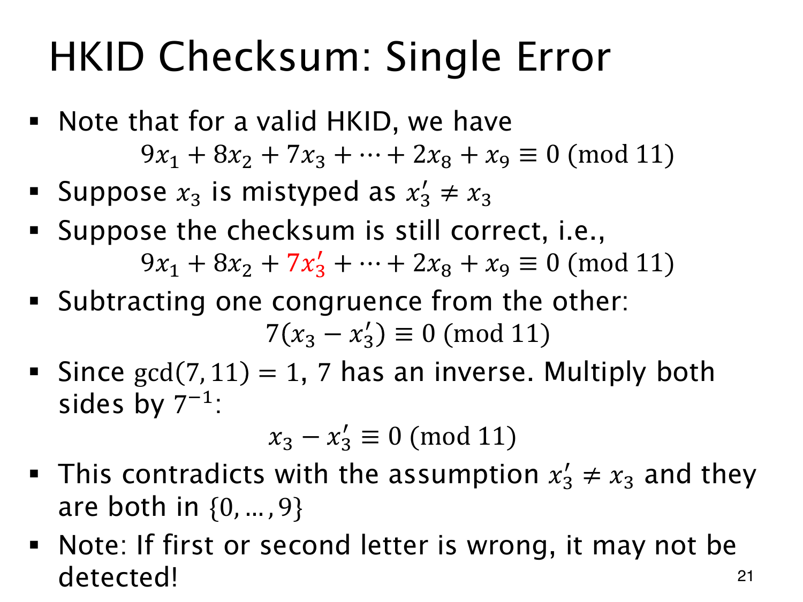

L1.13 · 第 21 页讲解原文
查看这一页课件

单个数字改错，会怎样影响校验式
原号码满足 9x1+8x2+⋯+2x8+x9≡0(mod11)。假设只将数字位 x3 写成不同的 x3′，其余不变；若新号码仍通过检查，两条校验式相减便有
7(x3−x3′)≡0(mod11).
gcd(7,11)=1，所以可乘 7−1，得到 x3−x3′≡0(mod11)。两个数字都在 0 至 9 内，差的绝对值最多为 9，其中只能有一个 11 的倍数：0。这就迫使 x3=x3′，与改错的假设矛盾。
因此单个数字位错误一定能检测。其他数字位的权重也都与 11 互素，可同样证明；校验字符取数值 0 至 10，单独替换时也适用相同思路。
字母位有不同的取值范围。A 编码为 10，L 编码为 21，相差 11；在同一位置替换，加权和的变化仍是 11 的倍数，检查就可能通过。首两个字母位置的错误因此可能漏检。